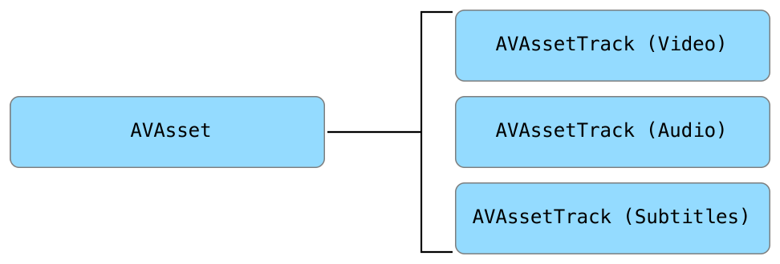

CS333
Mobile Development
Ilya Loshkarev loshkarev.i@gmail.com
Overview

Images
Image Picker
let imagePickerView = UIImagePickerController()
imagePickerView.delegate = self
// present image picker
self.present(imagePickerView, animated: true, completion: nil)
Standart controller to access Photos and Camera
from within any app
Sources and Media Types
// open Camera
imagePickerView.sourceType = .camera
imagePickerView.cameraDevice = .rear // .front
// open Photos
imagePickerView.sourceType = .photoLibrary
imagePickerView.allowEditing = false
// open Camera Roll
imagePickerView.sourceType = .savedPhotosAlbum
// type of media to show
imagePickerView.mediaTypes = [
// kUTTypeMovie, - only images
kUTTypeImage
]
Picker Delegate
func imagePickerController(picker: UIImagePickerController,
didFinishPickingMediaWithInfo info: [String : Any]) {
if info[UIImagePickerControllerMediaType] == kUTTypeImage {
let chosenImage = // captured photo or image from library
info[UIImagePickerControllerOriginalImage] as! UIImage
} else {
let movieURL = // URL of media file
info[UIImagePickerControllerMediaURL] as! URL
}
dismiss(animated: true, completion: nil)
}
Core Image
Library for image processing
// CIImage is a base image class
let inputCIImage = CIImage(image: inputImage)!
// All filters are created by name
let blurFilter = CIFilter(name: "CIGaussianBlur")!
blurFilter.setValue(inputCIImage, forKey: kCIInputImageKey)
blurFilter.setValue(8, forKey: kCIInputRadiusKey)
let cgImage = context.createCGImage(blurFilter.outputImage!,
fromRect: outputImage.extent())
Low-level library, KVC parameters setup
There are >150 default filters
Core Image Filter Reference - Apple DeveloperFilter Chains
let outputImage = inputCIImage
.applyingFilter(
"CICrystallize",
withInputParameters: [
kCIInputRadiusKey: 50
])
.applyingFilter(
"CICMYKHalftone",
withInputParameters: [
kCIInputWidthKey: 35
])
Image filtering takes some time
it is better to perform it in a separate queue
Save Image to Photos
func save(image: UIImage, to album: PHAssetCollection) {
PHPhotoLibrary.shared().performChanges({
// Request creating an asset from the image
let creationRequest =
PHAssetChangeRequest.creationRequestForAsset(from: image)
// Request editing the album
if let addAssetRequest =
PHAssetCollectionChangeRequest(for: album)
{
addAssetRequest.addAssets(
[creationRequest.placeholderForCreatedAsset!])
}
}, completionHandler: nil)
}
UIImageWriteToSavedPhotosAlbum(image, self, #selector(imageSaved), nil)
AVKit
Anatomy of Media

AVAsset is a container for media streams
AV Player
let player = AVPlayer(url: videoURL)
if player.currentItem.status == .readyToPlay {
player.play()
}
AVPlayer is a basic object to play media files
Anatomy of Player

AVAsset is a container for media streams
AV Player View Controller
let player = AVPlayer(url: videoURL)
let playerViewController = AVPlayerViewController()
playerViewController.player = player
self.present(playerViewController, animated: true) {
if let player = playerViewController.player!,
player.currentItem.status == .readyToPlay {
playerViewController.player!.play()
}
}
AVPlayerViewController is a default way of presenting audio and video
Player Notifications
Most AVPlayer Notifications are KVO based
// new item
player.addObserver(self, forKeyPath: "currentItem",
options: [.new, .initial] , context: nil)
// errors
player.addObserver(self, forKeyPath: "status",
options: nil , context: nil)
// update periodically
player.addPeriodicTimeObserver(
forInterval: CMTimeMake(1, 100), queue: DispatchQueue.main) {
time in print(String(format: "%02.2f", CMTimeGetSeconds(time)))
}
Queue Player
let queuePlayer = AVQueuePlayer()
let playerItem = AVPlayerItem(url:fileURL)
queuePlayer.insert(playerItem, afterItem:nil)
// queue as many items as you like
queuePlayer.play()
Audio Recorder
let recorder = AVAudioRecorder(url: resultURL, settings: [:])?
if recorder.prepareToRecord() {
recorder.record()
}
AV Capture View
Streaming Media
let asset = AVURLAsset(streamURL)
asset.resourceLoader.setDelegate(self, queue: DispatchQueue.main)
// play video/audio
let playerItem = AVPlayerItem(asset:asset)
let player = AVPlayer(playerItem)
// pause if playerItem is not ready yet
NSNotificationCenter.default.addObserver(self,
selector: #selector(pauseIfStalled),
name: AVPlayerItemPlaybackStalledNotification, object: nil)
player.play()
If you don't need to handle loading process events
default resourceLoader works just fine
Hardware Access
let session = AVCaptureSession()
Allows to access any capture devices
and configure capture settings
Location
Related Resources
- Camera Programming Topics for iOS - Apple Developer
- UIPIckerViewController - API Reference
- Core Image Programming Guide - Apple Developer https://developer.apple.com/reference/avkit/avplayerviewcontroller https://developer.apple.com/library/content/documentation/AudioVideo/Conceptual/MediaPlaybackGuide/Contents/Resources/en.lproj/ExploringAVFoundation/ExploringAVFoundation.html#//apple_ref/doc/uid/TP40016757-CH4-SW1
- AVFoundation Programming Guide - Apple Developer